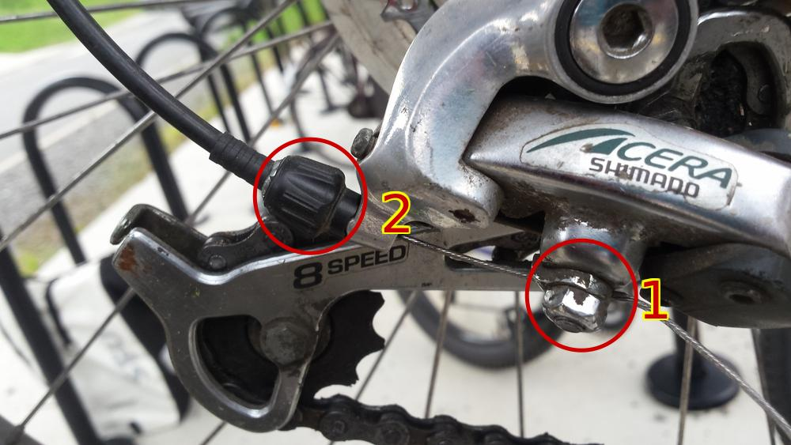

Keep the chain lubricated to make the gears change easily.
Clean the chain and gears once in a while to remove clumps of black dirt. The chain should also be cleaned regularly with a chain cleaning tool. The clumps of black dirt can be cleaned off as best you can with a stick or something - it's not necessary to remove the chain and gears from the bike, and indeed doing so requires breaking the chain for certain types of chains.
If that's not sufficient, then the regular adjustment that's needed is when the gear cable is stretched. The way it works is that when you pull on that cable it causes the derailleur to move and the gears to shift - squeezing the handlebars pulls the cable. But over time the cable gets stretched so has to be adjusted to be tighter again.
To adjust it, start in the middle gear of the 3 gears (if it has 3 gears on the front, otherwise start on the smallest of the 2) and the highest (smallest) gear of the rear gears that you're adjusting. Then loosen the nut at the bottom of the derailleur (1 in the picture) so the cable comes out. Move the cable up or down while shifting into different gears until they shift correctly. When it's almost right, there is a finer adjustment (2 in the picture) to fine tune it even more accurately. This takes a lot of trial and error and many attempts. Also, it might not be possible to get them to shift perfectly by this adjustment - there might be something else wrong (e.g. the gear shifters on the handlebars are worn out). And even if it seems like they're not shifting well while the bike is stationary, they might still shift well when you start riding.
There are 2 "limit" screws as well, which you don't need for regular adjustments - they're to limit how far the derailleur moves, but might be useful to build bikes from parts where one part was designed for a different number of gears than another. There are also 2 more limit screws on the front derailleur (the one near the pedals).
Should also oil all the pivot points of the derailleur - on my bike there are 4 of them.
When putting the bike down on the ground, don't put it down on the gears, put it down on the side opposite the gears.
When choosing which gears to use, don't mix high with low. E.g. gear 3 and 8 is fine, and gear 1 and 1 is fine, but gear 1 and 8 is a bad combo - it stretches the chain.